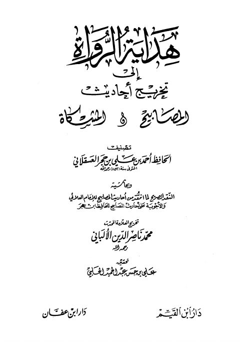
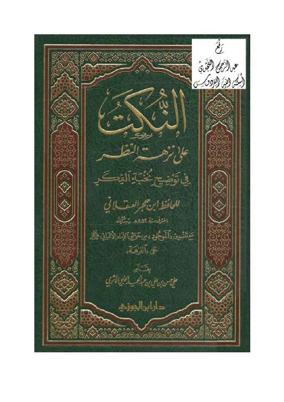
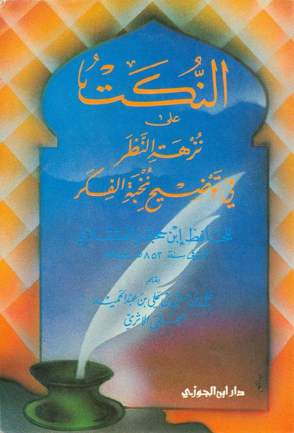

علي بن حسن عبد الحميد الحلبي
Author
Resources
 هداية الرواة إلى تخريج أحاديث المصابيح والمشكاة وبهامشه النقد الصريح
هداية الرواة إلى تخريج أحاديث المصابيح والمشكاة وبهامشه النقد الصريح
أحمد بن علي بن حجر العسقلاني
هداية الرواة إلى تخريج أحاديث المصابيح والمشكاة وبهامشه النقد الصريح
هداية الرواة إلى تخريج أحاديث المصابيح والمشكاة وبهامشه النقد الصريح
أحمد بن علي بن حجر العسقلاني

هداية الرواة إلى تخريج أحاديث المصابيح والمشكاة هداية الرواة إلى تخريج أحاديث المصابيح والمشكاة أحمد بن علي بن حجر العسقلاني • محمد ناصر الدين الألباني
النكت على نزهة النظر في توضيح نخبة الفكر، مع تضمين الموجود من حواشي الإمام الألباني رحمه الله على النزهة النكت على نزهة النظر في توضيح نخبة الفكر، مع تضمين الموجود من حواشي الإمام الألباني رحمه الله على النزهة أحمد بن علي بن حجر العسقلاني
النكت على نزهة النظر في توضيح نخبة الفكر لابن حجر العسقلاني النكت على نزهة النظر في توضيح نخبة الفكر لابن حجر العسقلاني أحمد بن علي بن حجر العسقلاني